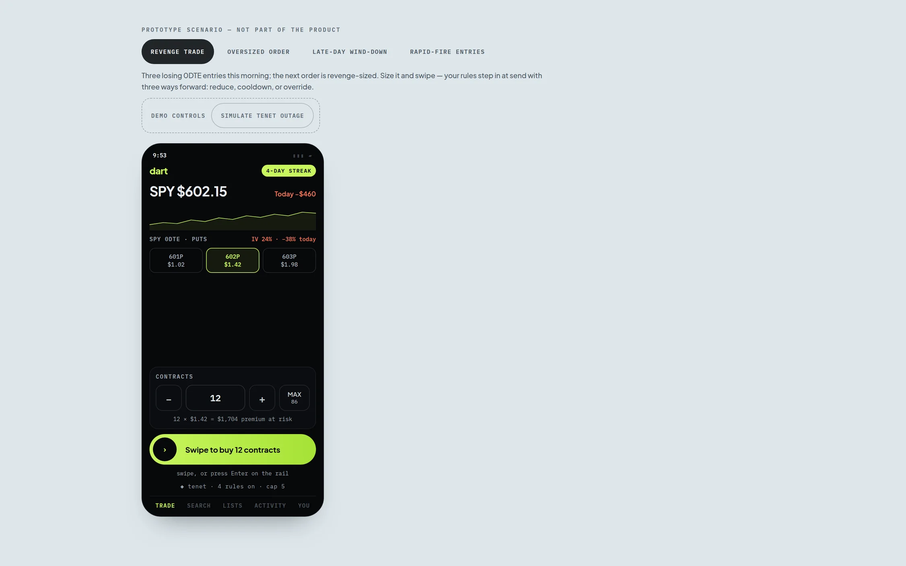
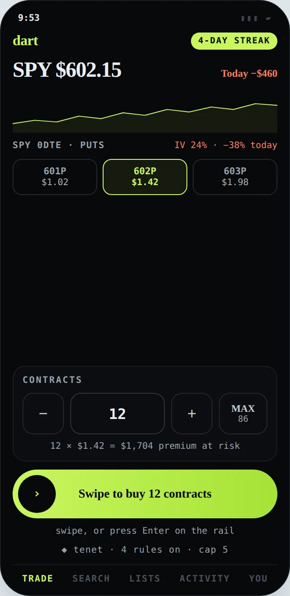
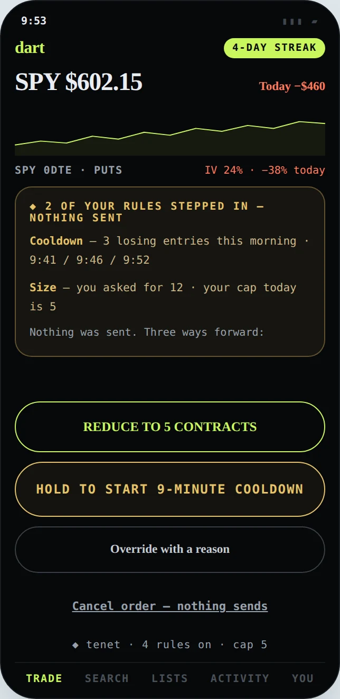
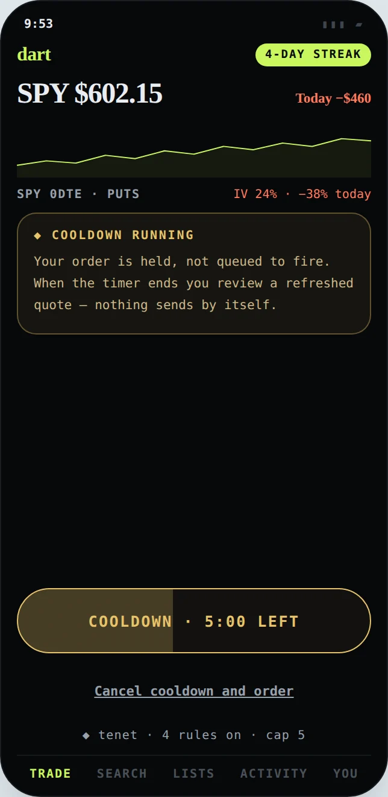
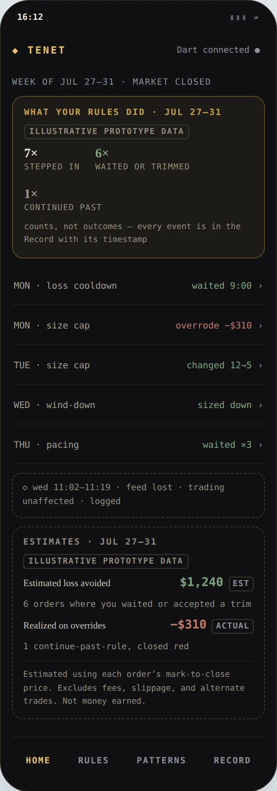
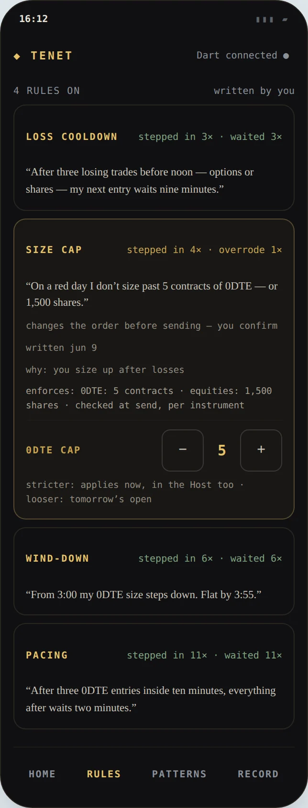
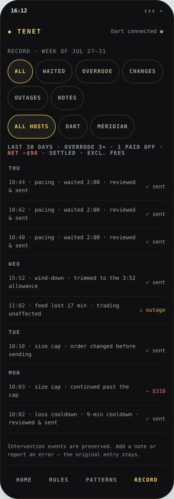

Tenet — one deliberate moment
Self-authored guardrails that restore one deliberate moment before an impulsive trade. An order-time behavioral intervention layer: rules written after the close become reversible friction at the moment an order is sent — inside two very different fictional brokers, Dart (mobile, 0DTE options) and Meridian (desktop, equities), backed by one shared Record.
The problemRetail apps can remove reflection through stimulation — streaks, confetti, one-tap re-entry. Professional workstations remove it through efficiency — hotkeys, dense ladders, sub-second tickets. After a losing sequence both converge on the same moment: an order sent before the trader has actually decided to send it.
The boundaryFriction, never a block. Tenet never sends an order automatically and never locks a trader out — waiting, reducing, editing, overriding, and canceling all stay available at every intervention. Overrides are recorded as context, not moral failure.
StatusFunctional prototype · not shipped The rules, intervention state machines, cross-surface sync, and Record are fully functional. Brokers, quotes, fills, and history are simulated; no user study has been completed.
HOW TO READ THIS PAGE — FUNCTIONAL works in the linked prototypes · SIMULATED illustrative prototype data · PROPOSED a plan, never a result. Dart and Meridian are fictional brokers; quotes, fills, and trading history are simulated and labeled as such in the interface. The broker SDK and import/analysis pipeline are future work — described, not represented as complete. Every image below is captured directly from the working prototype; the prototypes themselves are linked from each section.

TRY THE PROTOTYPEREAL BUILD · SIMULATED MARKET

SANDBOXED EMBED · SEND AN ORDER AND YOUR RULE STEPS IN — NOTHING SENDS, EVERY PATH REVERSIBLE · SIMULATED DATA
The interactive prototypes ship with the deployed site (v2/tenet-proto/) — this preview shows a real captured frame.
Small screen: the workstation demo needs room — use OPEN FULL PROTOTYPE ↗ above.
THE SHAPE OF THE PROJECTHONEST NUMBERS ONLY
3
WORKING SURFACES — TWO HOSTS + ONE COMPANION
4
STAGED SCENARIOS IN THE HOST DEMO, ALL INTERACTIVE
0
USER STUDIES COMPLETED — FIRST STUDY PLANNED BELOW
01 · THE
PROBLEM
Two interfaces, one failure mode: the next order becomes automatic. This is a product hypothesis, not a research finding. The design question: how might a trader's own rule interrupt that momentum — without becoming a lock, a punishment, or a trading signal?
02 · SCOPE &
ETHICAL BOUNDARY
What Tenet never does: send an order automatically, or lock a trader out. At every intervention, waiting, reducing, editing, overriding, and canceling all remain available.
- What is simulated: Dart and Meridian are fictional; quotes, fills, and trading history are simulated and labeled. The import/analysis pipeline and real broker integration are future work — described, not represented as complete. The rules, intervention state machines, cross-surface sync, and Record interactions are fully functional
- What Tenet is not: not a broker, not a trading journal, not a signal generator, not financial advice, and not a promise of profitability — one behavioral layer with a deliberately narrow job: restore a single reflective moment at send
03 · SYSTEM
MODEL
One loop, closed after the close: after-close Companion → user-authored rules → host check at send → reversible intervention → result + reason → shared Record → later reflection, and around again. Three asymmetries carry the ethics:
Stricter → immediate.
Tightening a rule syncs to both hosts right away — you can always raise your own bar mid-day.
Looser → next open.
Loosening arms at the next market open, so a rule can't be talked down in the heat of the moment it exists to interrupt.
Failure → fail open.
If the connection drops, trading proceeds unimpeded and the gap is visibly recorded. Tenet degrades to honesty, never to a lock.
04 · ONE RULE SET,
TWO KINDS OF SPEED
The central product decision: Dart and Meridian are not responsive versions of one interface. They are two host-specific expressions of the same behavioral layer — the same rule, arriving through each broker's own visual language, at each broker's own speed. In Dart the intervention has to earn a pause inside an interface built to eliminate them; in Meridian the same rule reads as workstation infrastructure — Ink Blue, quiet, and precise.


THE COOLDOWN,
HELD HONESTLY
Choosing the cooldown holds the order — held, not queued to fire. When the timer ends the trader reviews a refreshed quote and sends or cancels; an old order never fires by itself. The same mechanic runs in Meridian, where a revenge-sized 1,000-share short is held through the cooldown in a keyboard-first workstation, and every fill is labeled SIMULATED FILL.

MERIDIAN —
THE QUIET HOST
Meridian removes reflection through efficiency, so Tenet answers in the workstation's own register: a quiet status chip in the header (4 rules · 3 apply here), and an Ink Blue panel at transmit. The chart, ladder, order context, and positions are never touched — the guard follows the person, not the product. A chart annotation marks the moment: 9:53 — your rule stepped in.
![Meridian Trader, the fictional light-themed desktop workstation: SPY chart falling with a dashed annotation '9:53 — your rule stepped in', Level 2 ladder live, three losing round trips totaling −$360, and an Ink Blue panel over the order ticket reading 'Loss cooldown stepped in — nothing sent. Your rule: after 3 losing trades before noon, the next order waits nine minutes… this order flips you short at 2× your largest size today. Size cap not triggered — 1,000 of 1,500 shares. Start 9-minute cooldown / Override with a reason'](../images/tenet/meridian-stepped.webp)
05 · THREE KEY
DESIGN DECISIONS
A · “Stepped in,” not “blocked.”
The language decides whether it feels like a guardrail or a punishment. Earlier explorations used “blocked” and harder enforcement framing — superseded, because they misdescribed a reversible system and shifted authorship from trader to tool. Final: “Your rule stepped in.” The rule — authored by the trader — is the actor. Tradeoff, accepted: softer language means weaker deterrence by design; the goal is only that the trader decides.
B · Nothing sends by itself.
A cooldown that ends by sending would make Tenet an execution actor — and the approved order no longer exists at the new quote. Queue-and-send and auto-cancel were both rejected. Final: cooldown returns to review — refreshed quote, editable order, explicit re-confirmation; reduce, wait, override, and cancel are parallel paths, never defaults. Tradeoff: one more confirmation costs time in fast markets, shown honestly as the price of the pause.
C · Evidence without false certainty.
“Tenet saved you $X” is a causal claim the system cannot support. Final: behavior first — counts of interventions and outcomes lead; financial figures are demoted, labeled EST until settled, carry sample-size language and fee/slippage exclusions, and the Record is preserved verbatim. Tradeoff: hedged evidence is less persuasive than a bold number — weaker marketing accepted for stronger trust.
06 · THE COMPANION —
RULES / PATTERNS / RECORD
The after-close app is where authoring and evidence live. “What your rules did” leads with counts, not outcomes — 7× stepped in · 6× waited or trimmed · 1× continued past — and the estimates block shows the full Decision-C stance in one screen: estimated loss avoided $1,240 EST with its mark-to-close method note and fee/slippage exclusions, beside realized on overrides −$310 ACTUAL. Not money earned, and labeled so.



Open the live Companion → · Host + Companion, synchronized side by side →
07 · TRUST, FAILURE &
ACCESSIBILITY
A system that expects to be doubted:
- Trust & data. Reads order tickets at send and fills after close — conceptually via an embedded broker SDK; never your screen or other accounts. In the proposed model, disconnecting stops rules from arming, and account deletion removes both rules and Record. Every estimate, simulation, and fee/slippage exclusion is labeled in the interface
- Failure behavior. Failed sync surfaces with an explicit retry — never silent. Connection loss fails open: trading proceeds and the unprotected gap is visible in the Record (“feed lost 17 min · trading unaffected · logged”). Record events are immutable — notes and error annotations attach alongside, never rewrite
- Accessibility, as implemented in the prototypes: every intervention path is keyboard-complete end to end; option groups use proper radio semantics with arrow-key navigation; status changes are announced live; charts carry text alternatives; reduced motion is respected. No formal WCAG certification is claimed
08 · ITERATION —
THREE HONEST CHANGES
Earlier states are superseded exploration, described for contrast — not current behavior:
- Everything, therefore nothing → one job. The first concept was a broad trading-journal product — import, session analysis, annotation, plus interventions. Final: a focused intervention layer; the journal ambitions explicitly deferred
- “Blocked” → a legible state machine. Early framing left it unclear whether the order was stopped or the system could act alone. Final: hold → choose (reduce / wait / override / cancel) → explicit re-confirmation. Nothing automatic
- Outcome-led evidence → behavior-led Record. A headline dollar figure implying Tenet made money became a synchronized, behavior-led Record computed live from prototype interactions — explicit estimates, settled-vs-EST distinction, and SIMULATED FILL labels throughout
09 · LIMITATIONS &
VALIDATION PLAN
PROPOSED What this work cannot claim yet:
- No moderated participant study has been completed — nothing here is validated with users
- The broker SDK and import pipeline are conceptual — feasibility is argued, not proven
- Market outcomes cannot validate behavioral effectiveness — a “saved” trade may have been a missed winner
- Free-text override reasons and deeper evidence-to-fill linkage remain deferred
Planned first study: moderated think-aloud sessions with 6–8 active options/futures traders, including some prop-evaluation users, on the working prototypes — testing comprehension of why a rule fired, estimate versus actual, stricter-immediate versus looser-at-open, tone at the intervention moment, and whether anything in the design could inadvertently encourage more trading. A sample of this size supports comprehension and tone findings only — not efficacy claims.
The strongest thing Tenet does is remain reversible. The intervention moment is the product: a pause that names its reason and leaves every exit open. The next meaningful step is not more screens — it is moderated research on the prototypes and a real feasibility conversation about the broker SDK.
Friction, never a blockreduce · wait · override · cancel
Failure modefails open — visible in the Record
Evidence runnone yet — 6–8-trader study planned